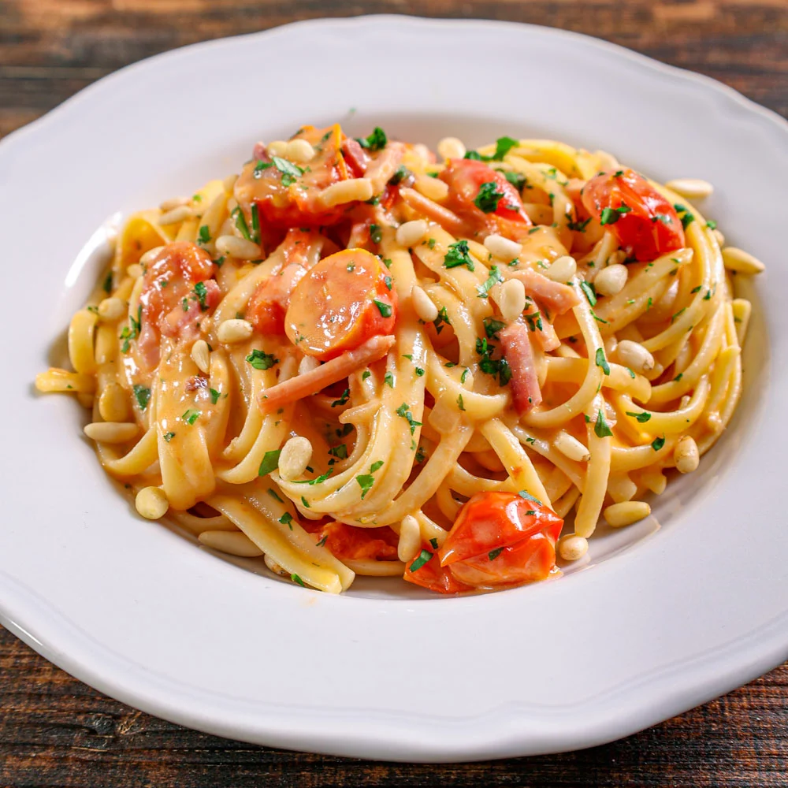

Pasta al mascarpone

Pasta al mascarpone, with tomato sauce, and sliced roasted tomatoes on top
Grocery list to make this delicious dish:
- Tomato sauce
- Fresh tomatoes (small if possible)
- Spaghetti or Linguine
- Garlic
- Olive Oil
- Mascarpone
Recipe:
- First thing first, fill up a pot with water and put it on the gas to boil
- Cut the tomatoes in slices, add them in a bowl and put some salt and olive oil and mix, leave it to rest
- At this point the water should be quite hot, put some salt on it
- Just wait! you're doing great!
- As soon as the water boils add the spaghetti or linguine
- After 7 min more or less based on preferences, take it out
- Put the pasta together with the tomato sauce on a pan, and you can add the mascarpone and then some garlic and start mixing and let it all melt together
- Sut down the pan, just put at the very end the initially slices tomatoes
- Serve and eat! ENjoy
If you would like to go back to the home page click on here: HOME